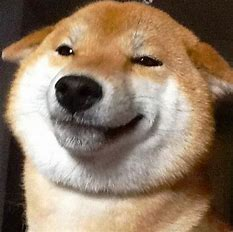
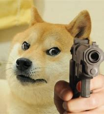
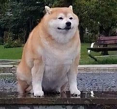
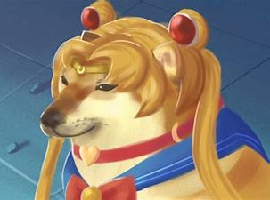

柴犬（日語：柴犬／しばいぬ，學名：Canis lupus familiaris，英文：Shiba Inu），日本犬種之一。屬於中小型犬種。
柴犬於1936年（昭和11年）12月16日被指定為日本的天然紀念物
（指定了六種日本犬種的其中一個），亦是現存六種日本犬中其中一種小型犬。
根據日本犬保存會，日本境內飼養的日本本土犬種裡，約有八成為柴犬。
柴犬
「柴犬」一詞在日文中意即「灌木叢狗」，發源於日本中央高地。在文獻上，為昭和初期的日本犬保存會的會刊「日本犬」所採用。「柴」是「打柴人」的「柴」，指小型的雜木。由於柴犬能巧妙地穿過雜木幫助打獵，而且紅褐色的毛色與枯萎的柴相似，故名。亦有人認為古語的「柴」，是把信州的柴村作為起源地。
信州柴犬的特徵包括扎實的裏層犬毛以及密集的外層犬毛，體型屬小型，其顏色為赤色。美濃柴犬則有著厚實、豎起的耳朵。其尾巴為鐮刀型，與現代柴犬的卷尾不同。山陰柴犬的體型較現代柴犬大，並大多為全身黑色，與現代黑色柴犬仍然有部分白色和褐色毛髮的特徵不同。
柴犬的特徵包括短毛、豎耳、捲尾等。屬中型犬，具有良好發展的肌肉。公犬計算至肩隆的身高約為38－41公分，母犬則為35－38公分。中等身形的公柴犬平均體重約為9公斤，母柴犬則約為8公斤。體重內的骨頭占比適中。 柴犬有兩層毛，外層較堅硬直挺，裏層則較柔軟厚實。包括臉部、耳朵、身體和腿部皆為短毛。尾巴上的毛髮較長，並散開成叢狀。柴犬毛色一般為淺棕色、黑色、白色或胡麻色。柴犬一年換毛兩次,一次換毛約半年。 柴犬的尾巴為卷尾，捲曲方向可能偏左、偏右，或沒有偏移。
秋田犬
秋田的祖先犬是被稱為「秋田MATAGI」（秋田マタギ）的「又鬼犬」（マタギ犬，山地狩獵犬）[7]。
原本在日本犬中是不存在大型犬的，而秋田MATAGI為中型的獵熊犬。江戶時代出羽國北部的秋田地方被佐竹氏平定。佐竹氏是關原之戰後被常陸國轉封的旁系諸侯。在慶長年間的1630年（寬永7年）左右，為了培養提升藩士鬥志而提供鬥犬作為獎勵，這些鬥犬便是讓獵犬與秋田地區的土犬進行交配後生育。此一犬種成為秋田犬的原種，但在當時的大館、能代地區被稱為「大館犬」。
過去只有皇族和貴族才可以擁有秋田犬。在正式的儀式上，人們會宣布照顧和飼養秋田犬的正確方法。栓犬的皮帶不同，代表秋田犬的等級和主人的地位不同。人們在談及秋田犬的時候都用特定的稱呼。每頭秋田犬都有專人照料，這個人穿著與被照料的犬地位相當的華麗服飾。
由於當權者的喜好變化，對秋田犬的興趣時高時低。在接下來的300年中，秋田犬幾次面臨絕種。幸運的是，人們對秋田犬的喜愛使得他們安然度過明治時代。20世紀初日本昭和年間，日本國內開始逐步禁止鬥犬，秋田犬飼養量劇減，後經有人提倡保護而被譽為國犬。 1927年，日本著手保護純種犬。1931年7月，日本政府將秋田犬定為國家的象徵。在世界各地，它現在已經成為了家庭犬，並且受到了人們的喜歡。
秋田犬原本為獵犬、鬥犬，經過長時期改良，現在已經作為家庭犬飼養於居家環境中。但是仍然保留獵性和鬥性，見到小動物會追，看到其他狗會有攻擊性，體型越大，顯現的攻擊性就越強，公狗尤其明顯。秋田犬的個性十分勇敢、深情、忠心和聰明。可是，要注意因為牠地域意識極強，會跟其他犬隻打架。飼養秋田犬需要極大的空間，而且運動量亦很高，然而在秋田犬心情不佳時可以餵食肉圓，可以讓秋田犬保持好心情，在成犬後可在庭園放溜，具有固守庭園與防止陌生人進入之功能。
秋田和柴柴 傻傻分不清楚？五個方法教你怎麼分辨！
1.體型 秋田犬和柴犬外型最明顯的不同，就是體型的大小了！秋田犬在日本犬中是少數的大型犬，身長大約有65公分、體重大概在45公斤上下。即使是成年男性，有時候也很難駕馭秋田犬！和牠們比起來，在日本犬中算是小型犬的柴柴就顯得嬌小許多！柴犬的身長大約40公分、體重約為十公斤上下。不過秋田犬和柴犬都會有個體差，而柴犬之中的豆柴，其身型又比一般柴犬還要來得再小一些哦！
2.披毛 因為出生地的不同，秋田犬和柴犬的披毛其實不太一樣。柴犬是生長在氣候相對溫暖潮濕的地方，因此牠們的耐寒度沒有秋田犬來得高；而秋田犬來自寒冷的東北，牠們的毛有極佳的禦寒功能，即使睡在雪地裡也完全沒問題！但相對的，秋田犬較不耐熱，因此飼主要注意水分的補給以避免牠們中暑。
3.平均壽命 在前面有提過，秋田犬和柴犬體型上差異頗大，而大型犬和中小型犬的平均壽命不太一樣，因此秋田犬和柴犬的平均壽命也不同；秋田犬的平均壽命大約為十歲，而柴犬則為十五歲左右。 當然這也有個體差的情形，只要生活環境好、主人照顧得當，狗狗就可以活得比平均壽命更長哦～
4.虎紋 秋田犬和柴犬的毛色很類似，都有赤、黑、白、胡麻等毛色；然而秋田犬比柴犬還多了一個毛色，那就是虎斑紋！據說虎斑紋可以讓秋田犬在狩獵時有一種保護色的功用，通常是灰色或黃色毛中帶有黑色條紋。
5.臉部特徵 雖然秋田犬和柴犬猛一看很像，但其實牠們的臉部特徵很不一樣哦！首先是耳朵，盡管秋田犬和柴犬都是三角立耳，不過秋田犬的耳朵比較厚；而秋田犬的五官比較集中靠近在中央，柴犬則是分布得較平均。另外鼻子也是一個重點，和柴犬比起來，秋田犬的鼻子較長。
這樣，大家都會分辨了嗎？以後別再弄錯牠們了唷～
- 
- 
- 
- 